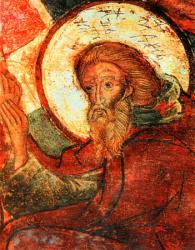

|
|
信徒豈有看見 Eb 弗6:12 |
|
1 Christian, dost thou see them 2 Christian, dost thou feel them, 3 Christian, dost thou hear them, 4 "Well I know thy trouble, Amen. |
|
|
Christian, Dost Thou See Them? https://hymnary.org/hymn/WASH1957/page/341
|
|
|
|
|


台語聖詩328信徒豈有看見 Sìn-tô͘ kiám ū khòaⁿ-kìⁿ https://youtu.be/2aAphPk2IlU - Christian, Dost Thou See Them (St Andrew of Crete)
https://youtu.be/vuMJJPRD5E0 -
First Sunday of Lent was the wonderful Lenten hymn "Christian, dost thou see
them".
https://youtu.be/isTNJY4vNyg
| Text: | Christian, Dost Thou See Them? |
| Author: | Andrew of Crete, 660-732 |
| Translator: | John M. Neale, 1818-1866 |
| Tune: | ST. ANDREW OF CRETE |
| Composer: | John B. Dykes, 1823-1876 |
| Short Name: | Andrew of Crete |
| Full Name: | Andrew, of Crete, Saint, approximately 660-740 |
| Birth Year: | 660 |
| Death Year: | 740 |
Andrew, St., of Jerusalem,

Archbishop of Crete (660-732). born at Damascus; he embraced the monastic life at Jerusalem, whence his name, as above. He was deputed by Theodore, Patriarch of Jerusalem, to attend the 6th General Council at Constantinople (680). He was there ordained deacon, and became Warden of the Orphanage. "During the reign of Philippus Bardesanes (711-714) he was raised by that usurper to the Archiepiscopate of Crete; and shortly afterward was one of the Pseudo-Synod of Constantinople, held under that Emperor's auspices in 712, which condemned the Sixth (Ecumenical Council and restored the Monothelite heresy. At a later period, however, he returned to the faith of the Church and refuted the error into which be had fallen." (Neale). He died in the island of Hierissus, near Mitylene, about 732. Seventeen of his homilies are extant, the best, not unnaturally, being on Titus the bishop of Crete. He is the author of several Canons, Triodia, and Idiomela; the most celebrated being The Great Canon. Whether he was the earliest composer of Canons is doubtful, but no earlier ones than his are extant. Those ascribed to him are:—1. On the Conception of St. Anne; 2. On the Nativity of the Mother of God; 3. The Great Penitential Canon. 4. On the Raising of Lazarus. 5, 6, 7, 8. On the First Days of Holy Week. 9. On the 25th Feast-day between Easter and Pentecost. Fuller biographical details in Diet Christ. Biog., vol. i. pp. 111-12. [Rev. H. Leigh Bennet, M.A.]
-John Julian, Dictionary of Hymnology (1907)
| Short Name: | J. M. Neale |
| Full Name: | Neale, J. M. (John Mason), 1818-1866 |
| Birth Year: | 1818 |
| Death Year: | 1866 |
John M. Neale's life is a study in contrasts:

born into an evangelical home, he had sympathies toward Rome; in perpetual ill health, he was incredibly productive; of scholarly temperament, he devoted much time to improving social conditions in his area; often ignored or despised by his contemporaries, he is lauded today for his contributions to the church and hymnody. Neale's gifts came to expression early–he won the Seatonian prize for religious poetry eleven times while a student at Trinity College, Cambridge, England. He was ordained in the Church of England in 1842, but ill health and his strong support of the Oxford Movement kept him from ordinary parish ministry. So Neale spent the years between 1846 and 1866 as a warden of Sackville College in East Grinstead, a retirement home for poor men. There he served the men faithfully and expanded Sackville's ministry to indigent women and orphans. He also founded the Sisterhood of St. Margaret, which became one of the finest English training orders for nurses.
Laboring in relative obscurity, Neale turned out a prodigious number of books and artic1es on liturgy and church history, including A History of the So-Called Jansenist Church of Holland (1858); an account of the Roman Catholic Church of Utrecht and its break from Rome in the 1700s; and his scholarly Essays on Liturgiology and Church History (1863). Neale contributed to church music by writing original hymns, including two volumes of Hymns for Children (1842, 1846), but especially by translating Greek and Latin hymns into English. These translations appeared in Medieval Hymns and Sequences (1851, 1863, 1867), The Hymnal Noted (1852, 1854), Hymns of the Eastern Church (1862), and Hymns Chiefly Medieval (1865). Because a number of Neale's translations were judged unsingable, editors usually amended his work, as evident already in the 1861 edition of Hymns Ancient and Modern; Neale claimed no rights to his texts and was pleased that his translations could contribute to hymnody as the "common property of Christendom."
Bert Polman
Tune Information
| Title: | ST. ANDREW OF CRETE |
| Composer: | John Bacchus Dykes (1868) |
| Meter: | 6.5.6.5 |
| Incipit: | 55555 55555 55551 |
| Key: | b♭ minor |
| Copyright: | Public Domain |
| Short Name: | John Bacchus Dykes |
| Full Name: | Dykes, John Bacchus, 1823-1876 |
| Birth Year: | 1823 |
| Death Year: | 1876 |
As a young child John Bacchus Dykes (b. Kingston-upon-Hull' England, 1823; d. Ticehurst, Sussex, England, 1876)

took violin and piano lessons. At the age of ten he became the organist of St. John's in Hull, where his grandfather was vicar. After receiving a classics degree from St. Catherine College, Cambridge, England, he was ordained in the Church of England in 1847. In 1849 he became the precentor and choir director at Durham Cathedral, where he introduced reforms in the choir by insisting on consistent attendance, increasing rehearsals, and initiating music festivals. He served the parish of St. Oswald in Durham from 1862 until the year of his death. To the chagrin of his bishop, Dykes favored the high church practices associated with the Oxford Movement (choir robes, incense, and the like). A number of his three hundred hymn tunes are still respected as durable examples of Victorian hymnody. Most of his tunes were first published in Chope's Congregational Hymn and Tune Book (1857) and in early editions of the famous British hymnal, Hymns Ancient and Modern.
Bert Polman
聖詩328首 『信徒豈有看見』 CHRISTIAN, DOST THOU SEE THEM?
217聖樂賞析
上週主日（4/18），牧師講道以『兩難之間』作為信徒的勉勵，並選擇了聖詩328首『徒豈有看見』做為回應詩，由於這首聖詩其中有轉調唱起來不太容易，但當我們「讓基督的道理，佇逐樣的智慧充滿恁的心」來吟唱這首聖詩，會發現古老的詩歌真的很美，這週就來介紹這首著名的拜占庭聖詩。
聖詩三二八首 信徒豈有看見
CHRISTIAN, DOST THOU SEE THEM?
信徒豈有看見在於聖地裡 四圍黑暗勢力圍你做對敵
信徒起來攻擊 俗情無利益 十字架頂功勞做得勝記號
Christian, dost thou see them on the holy ground,
How the powers of darkness rage thy steps around?
Christian, up and smite them, counting gain but loss,
In the strength that cometh by the holy cross.
信徒豈有覺悟魔鬼想暗步 誘惑當等機會導咱陷落罪
信徒勿得驚惶 心神著勇健 儆醒祈禱禁食交戰穩當贏
Christian, dost thou feel them, how they work within,
Striving, tempting, luring, goading into sin?
Christian, never tremble; never be downcast;
Gird thee for the battle, watch and pray and fast.
信徒豈有在聽伊假好的聲 儆醒堅固豎在祈禱於心內
信徒好膽應聲 祈禱有活命 交戰無久能平黑暗變光明
Christian, dost thou hear them, how they speak thee fair?
"Always fast and vigil? Always watch and prayer?”
Christian, answer boldly: “While I breathe I pray!”
Peace shall follow battle, night shall end in day.
我的盡忠工人我知你苦痛 看你厭倦情形我共你同情
由勞苦造就你 學吞忍克己 悲傷艱難若過與我站祖家
"Well I know thy trouble, O my servant true;
Thou art very weary, I was weary, too;
But that toil shall make thee some day all Mine own,
At the end of sorrow shall be near my throne.”
信徒豈有看見，這首聖詩是由英文聖詩Christian, dost thou see them翻譯過來的，而英詩為尼爾博士(John Neale
Mason)所作，據尼爾博士表示該詩是譯自克里特大主教聖安德烈(St. Andrew of Crete)的Great Canon其中一段，這首長詩Great
Canon至今東正教會(Orthodox)在預苦期(Lent)的每週主日仍會以應答的方式吟唱，原於原詩太長，很難應用在我們的禮拜當中，至今聖詩集仍僅以信徒豈會看見在禮拜中吟唱。
聖安德烈出生於主後660年敍利亞的大馬色(Damascus)，當時西羅馬帝國己經滅亡，而東羅馬帝國(又稱拜占庭帝國)，正受到新興信奉回教阿拉伯帝國武力的攻擊，帝國大片的領土逐漸喪失，到主後646年原帝國舊的宗主教區安提阿、耶路撒冷及亞歷山大均為阿拉伯帝國的佔領，很多在阿拉伯帝國統治下區域下的基督教徒受到利誘而紛紛改宗信仰回教，聖安德烈即生活在這樣一個時代。[1]
據說聖安德烈出生後都無法說話直到7歲時接受洗禮才開口說話，14歲時進入耶路撒冷附近的馬撒巴(Mar
Saba)[2]修道院學習，之後曾在耶路撒冷的主教座堂及君士坦丁堡的聖索菲亞大教堂擔任聖職[3]，主要從事孤兒、寡婦、老人的善牧社會救濟工作。692年之後聖安德烈受封成為克里特島的主教(Archbishop)，也因此被稱為克里特的聖安德烈。St.
Andrew of Crete在聖詩上的貢獻就是改良了舊的希臘聖詩Troparia(4,5世紀)、Kontakion(6世紀)的型式而創造了新的所謂Canon的聖詩體式[4]，其中最著名的就是
Great Canon其中共包含了9個ode(讚美詩)、250首Troparia(聖詩)，這首”信徒豈有看見”，就是選自他的Great Canon。
這首聖詩的曲調則由19世紀的Dykes, John
B.牧師所譜寫。在1964年版的台語聖詩中只有兩首需要轉調的曲調，另一首聖詩190首的曲調亦為Dykes牧師所做。
”信徒豈會看見”是一首啟應詩歌，前三節每節的前半段在告訴我們各種邪惡的力量正伺機擴大它的領域，魔鬼如吼獅一般尋找可吞吃的人，到下半段曲調一轉提醒信徒面對黑暗勢力應採取的積極應對態度和得勝的方式。最後一節則是主對我們的講話，他知道我們所面對的苦痛，主應許最後必將得勝。聖克德烈在作這首詩歌時必然是看到當時回教力量的壯大，聖地充滿了黑暗勢力，無所不用其極的以各種威迫、利誘一步一步的使信徒離棄信仰，當他再對照內心屬靈的爭戰有感而發寫下這首詩歌[5]。
[1] 希臘羅馬時代的背景將另章講述
[2] 馬撒巴修道院距耶路撒冷東南約16公里，地處汲淪河谷Kidron Valley西岸，修院位於群山之間雄壯險要，在主後五百多年有修士聖撒巴斯(St.
Sabbas)在該處建立修道院後成為東正教會重要的神學中心，至今仍有約修士20名在該處隱修。
[3]
耶路撒冷與君士坦丁堡的主教座堂為大公教會，五個主教區主教長所在的教堂。聖安德烈分別在擔任執事(deacon)及執事頭(Archdeacon)，此兩職務係教會中專任的聖職
[4] 拜占庭聖詩的特色另章講述
[5] 參考資料：聖詩合參、聖詩典考、大陸音樂辭典、基督教兩千年史
2. 祈求屬靈的智慧 (v.15-23)
這一段是保羅為教會的祈求，因為第十六節說﹕「就為
你們不住的感謝神，禱告的時候，常提到你們，求我們主耶
穌基督的神」。可見這是他的禱告。
「將那賜人智慧和啟示的靈，賞給你們，使你們真知道
祂」(v.17)。保羅為教會得屬靈的智慧而禱告。屬靈的智慧
是另一樣屬靈的福氣，是神要賜給信徒的，並且是可以向神
求來的。
「因此，我既聽見你們信從主耶穌，親愛眾聖徒」(v.15)。
「信從」就是信心，對主有信心。「親愛眾聖徒」就是對聖
徒有愛心。原來，當保羅一知道人真信了主，對主很有信心，
並且對其他的信徒很有愛心，他就為他們禱告。
「就為你們不住的感謝神,禱告的時候，常提到你們」。
保羅心中為此充滿喜樂，為他們感謝神，更為他們禱告。這
幾句話雖然很簡單，卻流露出保羅的生命。他看見人在主裡
蒙恩，進步，就感謝，就禱告。他是一個容易被恩感動的人，
也是一個禱告的人。他的心全放在信徒身上，他真是傳道者
的榜樣。
「求我們主耶穌基督的神，榮耀的父，將那賜人智慧和
啟示的靈，賞給你們，使你們真知道祂」(v.17)。保羅為信
徒得智慧和啟示的靈來禱告，希望人能得屬靈智慧，這屬靈
智慧是叫人能知道，能明白屬靈的事。人若能明白屬靈的事，
豈不是大福氣麼？
這屬靈的智慧是從神而來的，不是人自己有的。是神要
賞賜給人的，祂喜歡把這恩賜給人。請注意保羅在這裡不但
說是從神那裡來，更提到祂是榮耀的「父」，特顯祂是天父。
這是要提醒人神與信徒是有親密關係，神是慈愛像父親一樣
的。天父是喜歡賜給的，人向祂求，祂就給。雅各也有這樣
的講法(雅各書一5)，人若向神求這智慧，祂不斥責人，會厚
賜與人。因此，保羅為信徒求這智慧，因為這屬靈的智慧能
使人有所「知」。
A.
使人真知道神 (v.17)
「使你們真知道祂」這屬靈智慧能使人知道神。神是人
看不見，也是不能見的，祂是人無法測度的。以賽亞說﹕
「誰曾測度耶和華的心，或作祂的謀士指教祂呢？」(以賽
亞書四十13)，神是高深莫測的。保羅也回應說﹕「深哉！
神豐富的智慧和知識。祂的判斷，何其難測，祂的蹤跡，
何其難尋。誰知道主的心，誰作過祂的謀士呢？」(羅馬書
十一33-34)。神是這樣的偉大，能知道祂真是福氣，是智慧。
啟示的靈不但是使人知道神，更是使人「真」知道神。
所謂真知道神是說對神有豐富的認識，深入的認識，不是膚
淺的。我們對神常是認識得不夠，很皮毛､膚淺，怪不得我
們的靈性常起起落落，容易灰心，沮喪。我們若能真知道神，
認識神像亞伯拉罕，摩西，保羅他們一樣，我們一定能像他
們一樣享受在主裡面的安息，能像他們一樣，在百般的試煉
中仍勇往直前，直到行完路程，完成神所託付的。
能認識神是智慧，能真知道神是無比的智慧(哥林多前書
二：14-16)。
B. 使人知道有指望 (v.18)
「並且照明你們心中的眼睛，使你們知道祂的恩召有何
等指望。祂在聖徒中得的基業，有何等豐盛的榮耀」。人若
得著神智慧和啟示的靈，就知道自己是有盼望的。
(i).
知被神召是有指望
「知道祂的恩召有何等指望」?原來神智慧的靈使人知
神選召帶給人盼望。神給人的盼望是無比的，中文聖經用
「何等」來形容，是讚嘆盼望的豐富。神給祂所選召的人的
盼望有說不盡的豐富，保羅具体的提出幾樣，就是後面經文
所論說的，好讓信徒真知道。
(ii).
眼睛得開才知道
「並且照明你們心中的眼睛」。人怎能知道自己有什麼
盼望呢？那就需要眼睛得開了。人的眼睛怎能得開呢？那就
需要神的靈的光照了。神的靈好像燈一樣發出亮光，這亮光
使人看見，使人明白，原來神是那麼愛他，使不配的人，在
耶穌基督裡面得下述的盼望。人還未被聖靈的光照之前，他
的眼睛是被蒙蔽的，是被世界的神就是魔鬼弄瞎了的 (哥林
多後書四4) 。人只看見目前的，只看見物質層面的，人更只
看見黑暗，也活在黑暗裡。但神啟示的靈一來，就看見光，
就看見在耶穌基督裡的盼望。
人知道自己有盼望才能活得有盼望，才能真正有方向，
有目標，有動力。人知道自己得的盼望是那麼的寶貴，人才
更珍惜他所得的，才更懂得去愛施恩給他的神。
C. 使人知道神的產業 (v.18)
「祂在聖徒得的基業，有何等豐盛的榮耀」。保羅在這
裡又提到基業，但是和第十四節所提的有所不同。在那裡是
告訴我們，人可以在神裡面得基業，像兒子承受父親的產業
一樣。但在這裡，他卻告訴我們，信主的人成為神的產業，
神以人為產業。並且看這些產業是榮耀的，是無比的寶貴的。
這可希奇了，人在神裡面得寶貴的產業，我們是可以理
解的，但神以人為產業，並且看為寶貴，卻是叫人難以明白
的。因為人算什麼？人是什麼？人只不過是受造之物，而且
是軟弱如蟲的受造之物吧了。人是軟弱的，即使是信主之後，
仍不時發現自己是軟弱的，這樣的人，怎配稱為神榮耀的產
業呢？
這就是神無比的大愛了！保羅對哥林多信徒說﹕「可見
你們蒙召的，按著肉体有智慧的不多，有能力的不多，有尊
貴的也不多」(哥林多前書一26-31)，這是真實的。但神揀
選世上愚拙的，軟弱的，卑賤的，被人厭惡的，無有的，並
且使基督成為他們的智慧，公義，聖潔。使這些本來軟弱不
配的人成為義，成為聖潔，成為智慧，這就是神的憐憫，神
的大愛。當人看見那些本來不配的，竟因耶穌基督的原故，
被高升，被高舉，由不配成為配，這是何等的奇妙，人真是
禁不住要讚嘆，要向神讚美。
人能成為神的產業，一但成為祂的產業，祂就會全力保
護這產業，這就是人的大盼望！
人有這種看見，需要神智慧的靈的啟示。人若知道自己
是神榮耀的產業，才知自己是這樣的有盼望，才會好好珍惜
自己，保守自己，使自己與神榮耀的產業名實相符。
D. 使人知道神的能力 (v.19-23)
「並知道祂向我們這信的人所顯的能力，是何等的浩大」
(v.19)。知道神的大能力也是信祂的人的寶貴盼望。「能力」
就是力量，權能，權柄。「浩大」是由兩個字組成的﹐「浩」
是超越，是滿的意思。「大」則是宏大，偉大的意思。
信徒真需要認識我們的神是滿有能力的，而且祂的能力
是浩大的，是多樣的，是超越的，是無比的。因為唯有如此，
我們在多災多難，多試探和試煉的人生，才能活得喜樂，行
事為人才能榮耀神。怪不得神在亞伯拉罕九十九歲向他顯現
時特別對他說﹕「我是全能的神，你當在我面前作完全人」
(創世記十七1)。我們若真知道神是全能的，祂的能力是浩大
的，我們就真的有了靠山，我們就滿有勇氣，無論遇到什麼
事也不怕了。
我們要求神智慧和啟示的靈開啟我們的心眼，好叫我們
能有這樣的看見，能有這樣的知道。
(i). 是向信的人(v.19)
「並知道祂向我們這信的人」。神這浩大的能力是向信
祂的人顯出來的，信的人有機會可以經歷和明白祂的能力，
不信的人根本不領會，也法領會。信主的人是何等的寶貴，
何等的有福氣，何等有盼望。
(ii).
就是基督復活的能力 (v.20)
「就是照祂在基督身上，所運行的大能大力，使祂從死
裡復活，叫祂在天上坐在自己的右邊」(v.20) 。神的大能具
体的表顯在耶穌基督從死裡復活的事上。耶穌基督能從死裡
復活，是神浩大能力的明證，是神運用祂能力的結果。耶穌
能從死裡復活，以大能證明祂是神的兒子，祂就是神。
死而復活是無比的大能，是人類最需要的大能。因為千
百年來，人被死亡所困，人類也認定死了就是完了，沒有希
望了，人懼怕死亡而成為奴僕 (希伯來書二14-15)。但耶穌
死了，又復活了，證明祂勝過死亡，祂是生命的主宰，只有
祂才能將生命賜給人，只有在這生命的主裡面，人才能有永
生。這就是人類的大盼望。
(iii).是超越的大能
(v.21-23)
「遠超過一切執政的，掌權的，有能的，主治的，和一
切有名的。不但是今世的，連來世的也都超過了」(v.21)。
耶穌基督從死裡復活，如今坐在神的右邊，使祂超越一切。
「右邊」是代表有能的一邊，猶太人常喜歡用右邊表示能力
(參看詩篇十六8，八十17,一0 九31，一一0 1，5，一二一5)。
這位坐在天父右邊的主，滿有能力，超越一切。
超越一切的權柄 (v.21)。保羅先指出，主耶穌超越一切
的權柄。「執政的all rule, principality，掌權的authority，有
能的power，mighty，主治的lordship，dominion，有名的
all name that is named」，這些都是統治者。但他們是指誰
呢？是指那些人呢？聖經這些用詞大都是保羅用的，他用的
時候大都和天空的掌權者有關。例如﹕
「順服空中掌權者的首領，就是現今在悖逆之子心中運
行的邪靈」(以弗所書二2) 。
「要藉著教會，使天上執政'的、掌權的、現在得知神百
般的智慧，這是照神從萬世以前，在我們主基督耶穌裡所定
的旨意」(以弗所書三10-11)。
「我們並不是與屬血氣的爭戰，乃是與那些執政'的、掌
權的、管轄這幽暗世界的、以及天空屬靈氣的惡魔爭戰」
(以弗所書六12) 。
「既將一切執政'的掌權的擄來、明顯給眾人看、就仗著
十字架誇勝」(歌羅西書二15)。以上經文明顯是和天上的掌
權者有關。
但是，有時保羅用這些字句時也包括地上的執政者，例
如﹕
「再後末期到了，那時，基督既將一切執政的，掌權的，
有能的，都毀滅了，就把國交與父神」(哥林多前書十五24)，
這經文和啟示錄十九章及二十章有關，那是論到基督再臨地
上，戰勝敵基督等一切敵對勢力，是發生在地上的。
「因為萬有都是靠祂造的，無論是天上的，地上的，能
看見的，不能看見的，或是有位的，主治的，執政'的、掌權
的、一概都是藉著他造的、又是為他造的」(歌羅西書一16)。
因此，我們可以這樣說，保羅所提到這些掌權者是包括了天
上的和地上的。保羅要讓信徒看見，要他們知道，他們所信
的主是遠超一切的。在地上，他們受政權的轄制逼害，但不
要氣餒，要知道主才是真正的統治者。在靈界，人相信有天
使，也相信有鬼魔，邪靈，保羅更希望人知道主耶穌遠超這
些靈界有權能者，因為祂已得勝一切，祂是萬主之主。信徒
如果這樣真知道主，那麼，他真是個有盼望，有福的人。
超越時空
(v.21)。耶穌基督不但是超越一切的權柄，祂
也超越時空。「不但是今世的，連來世的也都超過了」，既
說「今世」和「來世」明顯是有關時空了。保羅要信徒真知
道，耶穌基督不但超越今世和來世一切的權柄，祂也是超越
時空的。祂是始，也是終﹔祂是首先的，也是末後的。在祂
沒有開始也沒有結束，祂掌管一切，因為連時間，空間也是
祂創造的。怪不得聖經常說「創世以前」等類的話，無非是
要表明這道理，祂是超越時空的。
如果我們真知道主是超越時空，時間在祂手中，祂掌管
今世和來世的一切，那我們的未來，都在祂手中，祂全知道，
我們豈不是可以很放心的交託祂麼？今天我們有許多明天的
憂慮，是否因為不知道祂是這樣的超越呢？
超越萬有
(v.22)。「萬有」就是一切的東西，宇宙所
存在的一切﹔物質的或靈界的，主耶穌都超越這一切。
「又將萬有服在祂的腳下」，宇宙萬物都在主耶穌的腳
下，順服祂，聽祂指示，受祂管理。怪不得，祂可以在海面
上行走，可以平靜風浪﹔又可以以水變酒，以五餅二魚食飽
五千人﹔可以醫治各樣的病症，更可以叫死人復活，因為一
切都服在祂的腳下，受祂管治。
卻與教會成一体
(v.23)。這樣一位耶穌，理應高高在
上，可是祂卻與教會成為一体，這真是奇妙的道理，是一大
奧祕，是世人不能理解，不會明白的。
「使祂為教會作萬有之首，教會是祂的身体，是那充滿
萬有者所充滿的」。保羅告訴人，耶穌基督不但超過萬有，
祂更是為教會的原故，使萬物服在祂的腳下，使教會知道祂
是萬物之首。然而這位萬物之首的主，竟然讓教會作祂的身
子，與教會聯合成為一体。
教會怎樣作祂的身体呢？原來，耶穌是生命的主，人肯
相信，接受祂作救主，祂就將生命賜給人，使人擁有像祂一
樣的生命。這樣人就可以在祂裡面，祂也在人裡面。這樣祂
與人就合而為一，完完全全的合而為一(約翰福音十七20-23)，
祂作頭，信的人成為祂的身体。祂這樣看重教會，因為祂愛
教會。萬主之主的耶穌竟然與人聯合，這是何等的奧祕，人
是何等的蒙福。人如果真有這樣的知識，人真不會以信耶穌
基督為恥了。
「教會是那充滿萬有者所充滿的」。教會因為這樣地與
主聯合，因此，神所有的一切都成為教會的。神是豐盛，豐
富的，教會既與祂聯合，教會就被祂的豐盛所充滿，本來無
有的教會，卻因此而成為豐富。然而這道理有多少信徒知道？
有多少人認識？因為不認識，不知道，故此就沒有讓耶穌基
督真正的作主，甚至把祂趕到門外，因此，我們個人的靈命
是貧乏的，教會整体也是貧乏的。我們真需要啟示和智慧的
靈來照明我們的心眼，使我們能看見，好叫我們的人生不再
貧窮。
https://pastorlau.org/pages/sermon/Eph5.html
Words: Andrew of Crete (circa b. _____, 660; d. _____,
732); English translation John Mason Neale (b. Jan. 24, 1818; d. Aug. 6,
1886)
Music: St. Andrew of Crete, by John Bacchus Dykes (b. Mar.
10, 1823; d. Jan. 22, 1876)
Links:
Wordwise Hymns (John
Mason Neale)
The Cyber
Hymnal
Hymnary.org
Note: I debated for some time whether to include this hymn at all. In the end, I decided to do so, with qualifications, because it is historically important. It is a very early hymn, and Andrew of Crete made significant contributions to early church hymnody. Hymnals such as the Worship and Service Hymnal (Hope Publishing, 1957) do include Dr. Neale’s version, so what I’ll say here may not be agreeable to all. However, a blog is an opinion vehicle, so here goes.
Knowing the background of the hymn should prompt a more careful examination of the text. Andrew was a monk, and his monastic views linger beneath the surface. For one thing, he advocated the veneration of images. This hymn was written for the time of the Great Fast of Lent, in the weeks before Easter. It is redolent with the asceticism and self-mortification often admired by the Church of Rome, which raised Andrew to their official sainthood in 1984.
In the damp and dark of his cell, which he calls “holy ground” (CH-1). Andrew may well have been near fainting with hunger in the Great Fast. As he wrestled with temptation and demonic assaults, he would look to the rough crucifix on his wall for help (“The strength that cometh, by the holy cross,” CH-1). That is the background of this hymn, though it isn’t always obvious on the surface.
Aperfect game in baseball is one of at least nine innings in which no opposing batter reaches first base. Twenty-seven up to bat, and twenty-seven down. However, there may still be errors made. For example, suppose the third baseman fumbles a foul ball, preventing an out from being registered. That does not count against the perfect game, if the batter is struck out subsequently.
Whether we’re thinking of things such as sports, symphonies, inventions, battles, or computer programs, true “perfection” is in very short supply. The same thing goes for the hymns of the church. Yes, they’re usually (or should be) based on the infallible Word of God, and often exalt the sinless perfections of the Lord Jesus Christ. But, they were written by fallible human beings.
Perhaps the author espoused teaching that is not biblical. Or wrote in such a way that the truth is obscured or distorted. In evaluating our hymns we must first ask: Is it biblical? Does it represent an expression of orthodox doctrine? As the Lord instructs the prophet Isaiah, “To the law and to the testimony! If they do not speak according to this word, it is because there is no light in them” (Isa. 8:20).
The question then arises, what shall we do with hymns that miss the mark? John Calvin’s answer was that we should only sing the Scriptures themselves, specifically the Psalms. But his contemporary, Martin Luther, not only believed in using songs produced later, he wrote some of them himself.
Two centuries further on, Isaac Watts grew up in a Psalms-only church. But he argued that for a congregation to confine themselves to these, wonderful though they are, was to miss a great deal of important New Testament truth. He eventually won the argument, and wrote about six hundred new songs.
Hundreds of hymn writers have followed in his wake, and though their contributions are sometimes sublime, they are not perfect. If we determine to discard them on that basis, we will be driven back almost entirely to using only the Psalms, the hymn book of the Bible. But the situation is not quite that bleak.
To begin with, many editors of our modern, evangelical hymnals have weeded out those hymns that consistently depart from what the Bible teaches. Or they have omitted stanzas that do so. And if there is much in a hymn to recommend it, with the exception of a few lines, the editors will sometimes alter those lines to conform to more widely accepted Christian doctrine.
Much of this can also take place at the local level. And it’s important. In our hymns, we are praising God, and teaching one another. Hymn singing is not a mindless ritual. It has a purpose. If we are to be “teaching and admonishing one another in psalms and hymns and spiritual songs, singing with grace [thanksgiving and praise] in [our] hearts to the Lord” (Col. 3:16), we must guard against error.
There are definitely problems with Andrew’s hymn. Stanza two speaks of struggling with inner temptations to sin, and the original says we are to, “Smite them by the virtue of the Lenten Fast!” Where is such a notion found in Scripture? (It is not.)
In CH-4, Andrew consoles himself in his life of penance and hardship by having the Lord Jesus say to him: “Thou art very weary, I was weary, too; but that toil shall make thee some day all Mine own.” But the Bible is quite clear that it is not by good works, or self denials, however arduous, but by simple faith in Christ that we enter God’s family and become “His own” (Jn. 3:16; Gal. 3:26; Eph. 2:8-9; Tit. 3:5).
Two decades after Dr. Neale wrote his translation, a revised version of the hymn dropped the fourth stanza, and changed a few phrases in the first three (Hymns of Praise, with Tunes, 1884). You can compare it with Neale’s version on the Cyber Hymnal. Personally, if I were to consider using this hymn at all, it would have to be in such an altered version.
1) Christian, does thou see them, how thy foes abound,
How the powers of darkness rage, thy steps around?
Christian, up and smite them, counting gain but loss,
In the strength that cometh from our Saviour’s cross.
2) Christian, does thou hear them, how they speak thee fair?
Tempt thee give up watching, cease from praise and prayer?
Christian, answer boldly: “While I breathe I’ll pray;”
Peace shall follow battle, night shall end in day.
3) Christian, does thou feel them, how they work within,
Striving, tempting, luring, goading on to sin?
Christian, never tremble, never be downcast;
Trusting in Thy Saviour, trust Him to the last.
Questions:
1) Is there enough good in this hymn that you would consider using it?
2) What is the biblical means of dealing with temptation to sin?
Links:
Wordwise Hymns (John
Mason Neale)
The Cyber
Hymnal
Hymnary.org
https://wordwisehymns.com/2016/01/08/christian-dost-thou-see-them/